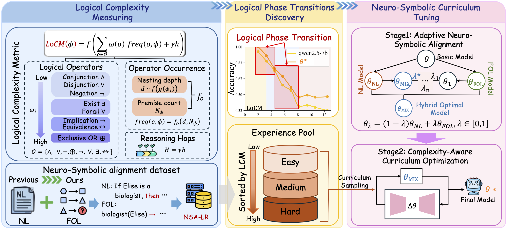
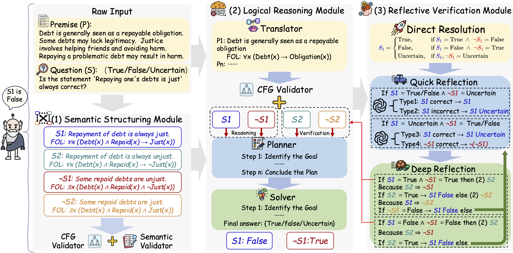
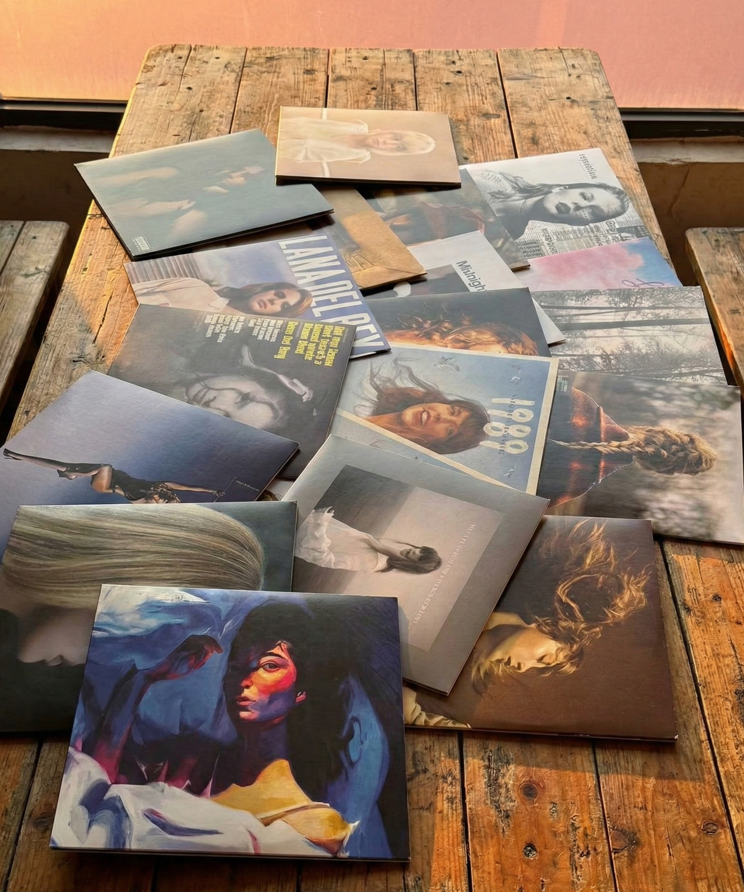

Undergraduate Student, Cyber Science and Engineering
Huazhong University of Science and Technology (HUST) · Qiming Experimental Class
Hi, I'm Xinglang (Norman) Zhang, a sophomore undergraduate majoring in Cyber Science and Engineering at Huazhong University of Science and Technology (HUST), supervised by Zikai Song. I'm interested in AI reasoning and logic, and I enjoy exploring how structured thinking and human insight can work together.
I'm naturally proactive and collaborative—I like initiating ideas, working with others, and turning abstract concepts into practical work. Beyond research, I value communication, responsibility, and long-term growth.
I'm still learning, but highly motivated, open to feedback, and always excited by meaningful challenges.
Logical Phase Transitions: Understanding Collapse in LLM Logical Reasoning Accepted to ACL 2026
ACL 2026 Main Conference, 2026. Also on arXiv:2601.02902
Identifies critical logical complexity thresholds in LLMs and proposes a model-agnostic Logical Complexity Metric (LoCM) alongside a neuro-symbolic curriculum tuning framework.

From Ambiguity to Verdict: A Semiotic-Grounded Multi-Perspective Agent for LLM Logical Reasoning Accepted to ACL 2026
ACL 2026 Main Conference, 2026. Also on arXiv:2509.24765
Introduces LogicAgent, a multi-perspective reasoning framework grounded in semiotics, and RepublicQA, a philosophy-inspired benchmark.

Neural-Symbolic AI, LLM Reasoning, LLM Agents, Computational Social Science, Logical Reasoning, AI safety
PyTorch, Transformers, LoRA, SFT, RLHF, vLLM, Deep Learning
Music: I'm a huge fan of Taylor Swift and Lana Del Rey, and I enjoy collecting their vinyl albums.

Favorite Character: Hachi from Chiikawa. He's cute, positive, hardworking, and kind to everyone around him.
Favorite Sport: Ultimate Frisbee 🥏